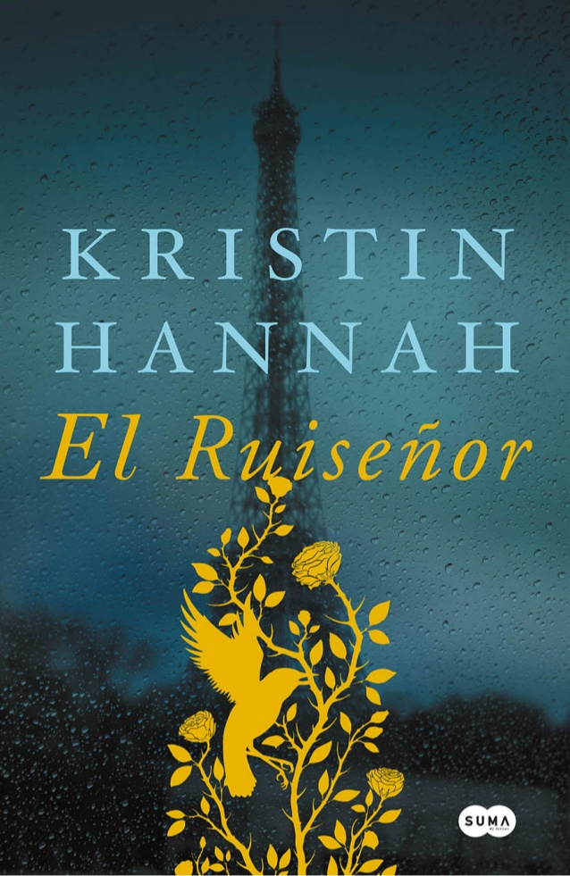
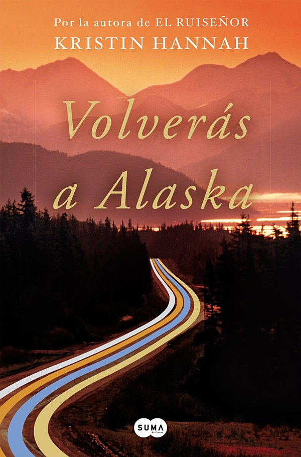
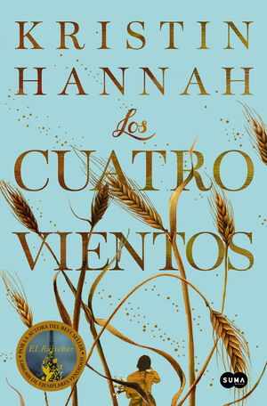

Libros de Kristin Hannah

El Ruiseñor - The Nightingale
Más sobre el libro
Francia, 1939. Dos hermanas buscan su propio camino hacia la supervivencia, el amor y la libertad en la Francia ocupada durante la Segunda Guerra Mundial.

Volverás a Alaska - The Great Alone
Más sobre el libro
Alaska, 1974. Indómita. Impredecible. Y para una familia en crisis, la prueba definitiva. Una épica historia de amor, pérdida y supervivencia que celebra la resistencia del espíritu humano y la inquebrantable fuerza de las mujeres.

Los cuatro vientos - The Four Winds
Más sobre el libro
Texas, 1921. La Gran Guerra ha terminado y Estados Unidos parece entrar en una nueva era de optimismo y abundancia. Pero para Elsa, considerada demasiado mayor para casarse en una época en la que el matrimonio es la única opción de una mujer, el futuro es incierto.